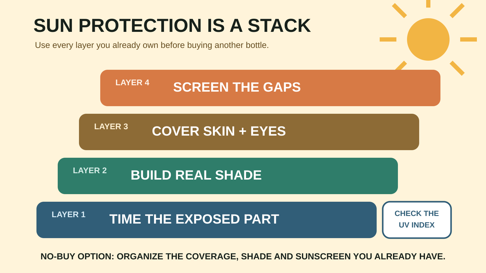

GEAR SYSTEM · SUN AND HEAT
Family Sun Protection: Sunscreen vs UPF Clothing vs Shade
Stop asking one bottle to cover every failure. Time, shade and clothing do most of the structural work; sunscreen covers the exposed gaps.

Who needs this system—and who should skip the shopping
Use it: any family spending sustained time outside, especially near water, sand or snow, where reflected radiation can increase exposure. Skip the purchase: families that already own suitable hats, tightly woven or UPF clothing, shade and an unexpired sunscreen the kids will tolerate. Organizing existing gear is a valid solution.
This is general planning information, not individualized medical advice. Ask a clinician about infants under six months, medication-related sun sensitivity, allergies, significant skin conditions or a prior serious reaction.
Start with the UV Index, not the temperature
The EPA's UV Index forecasts expected ultraviolet intensity on a scale from 1 to 11+. Heat and UV are different hazards: a cool clear day can still carry meaningful UV exposure. CDC guidance says protection is needed when the index is 3 or higher. Check the location and the hours you will actually be outside, then shorten or move the exposed part of the day when practical.
For beach, trail and park days, put the most exposed activity earlier, schedule lunch in real shade, and make the second half optional. The family day-trip system already uses energy and weather checkpoints; sun protection belongs inside those checkpoints, not as a last-minute spray in the parking lot.
The four-layer decision framework
Layer 1 — Timing
FDA guidance advises limiting time in the sun, especially from 10 a.m. to 2 p.m.; EPA's broader planning guidance emphasizes 10 a.m. to 4 p.m. Use those windows as warnings, not a reason to cancel every summer day. Move the long hike, open-water time or metal-bleacher stretch away from solar midday when possible.
Layer 2 — Shade
Choose fixed shade first because it cannot blow away. A permitted canopy or umbrella can create a reliable base at a beach or field, but it needs the correct anchors, enough room and a real wind limit. Shade reduces exposure; it does not eliminate reflected or scattered UV, so clothing and sunscreen still matter.
Layer 3 — Clothing, hats and sunglasses
Tightly woven coverage is repeatable and does not need reapplication. A labeled UPF shirt can be useful for swimming, boating, all-day fields and children who resist repeated torso application. Check whether the manufacturer states how washing, stretching and wetting affect the rating. A broad-brim hat covers more than a baseball cap; if the child will only wear a cap, protect ears and neck another way.
For sunglasses, FDA recommends a UV400 rating or “100% UV protection.” Dark lenses alone do not prove UV protection, and toy sunglasses may not provide it.
Layer 4 — Sunscreen on the gaps
Choose a broad-spectrum product with at least SPF 15 and follow its Drug Facts directions. SPF 30 is a simple family default when the formula, label and skin tolerance fit, but a higher number does not cancel missed spots or skipped reapplication. Use a water-resistant product for swimming or sweating, and read whether the label specifies 40 or 80 minutes.
FDA says to apply liberally to exposed skin and reapply at least every two hours, more often after swimming or sweating and according to the label. No sunscreen is waterproof. Spray products may be flammable; follow the warning and keep them away from flame.
Lotion, stick or spray?
Lotion or cream: easiest to see and spread over larger areas, but slower with impatient kids. Stick: tidy for faces and targeted reapplication, but multiple passes are needed for even coverage. Spray: fast for adults who can control application, yet wind, missed skin, inhalation concerns and flammability warnings make technique critical. Never let format marketing replace the Drug Facts label.
Do not invent homemade sunscreen. Do not buy by fragrance alone. Do not assume “mineral,” “natural,” “reef friendly” or a high SPF answers water resistance, broad-spectrum labeling, tolerance or destination rules. Compare the exact label.
The trip-based buying decision
- Two-hour shaded park: existing clothing, hats and sunscreen may be enough. No canopy required.
- Beach or pool: UPF swim shirts reduce exposed area; add water-resistant sunscreen, eye protection and destination-approved shade.
- Open trail: prioritize breathable coverage, a stable hat and sunscreen that rides in the family daypack.
- Amusement park or fair: pack a small reapplication kit and identify indoor or deeply shaded breaks before arrival.
- Snow day: exposed faces and reflected UV still matter; cold weather is not a UV shield.
The eight-minute departure protocol
- Check the UV Index and forecast.
- Move the most exposed activity if the timing is poor.
- Dress children before screens, snacks or the car.
- Apply sunscreen to exposed skin according to its label before sun exposure.
- Pack the same product for reapplication; do not rely on remembering a different formula.
- Add hats, sunglasses and a dry backup shirt.
- Set one phone alarm tied to the label and activity, not a vague promise to remember.
- Name the first shade and water break before leaving.
Food, water, restrooms and meltdown logistics
Sun protection fails when adults are juggling lunch, bathrooms and a child who refuses to stand still. Apply before loading the car when the label allows, use the restroom on arrival, and schedule reapplication with food or a dry-clothes break. Keep sunscreen accessible rather than buried under the cooler.
Carry water and use the cooler guide for perishable food. Sun protection does not prevent heat illness. If a child becomes unusually weak, confused, faint, nauseated or stops acting normally, end the activity, move to a cooler place and seek appropriate medical help.
Weather and kid-resistance backups
Hat refusal: use shade, clothing and exposed-skin sunscreen rather than turning the parking lot into a 20-minute argument. Sunscreen refusal: move to coverage and shade while addressing the reason; do not send bare skin into midday exposure to “teach a lesson.” Wind defeats the canopy: lower and remove it according to the manufacturer and destination rules; never let children hold it in gusts. Thunder: shade structures are not lightning shelters. Move to a substantial building or enclosed hard-topped vehicle.
The family beach-day system shows where shade and dry-clothes breaks fit. The rain-gear guide handles the opposite forecast without confusing comfort gear with storm safety.
Commercial boundary and no-buy option
The comparison links on this page use Mr Adventure Dad's approved Amazon Associate setup. They point to relevant categories, not claimed winners. We have not asserted hands-on testing, prices, stock, ratings, ingredient suitability, UPF durability, wind performance or medical superiority. Verify the exact product label, fit, instructions, recalls and destination rules.
No-buy system: schedule earlier, use existing tightly woven coverage, choose built-in shade, wear verified sunglasses, and use an existing in-date broad-spectrum sunscreen as directed. Better behavior beats a premium bag of redundant gear.
Official sources and check date
Guidance was checked August 26, 2026. Product labels and public-health guidance can change.
- FDA: sunscreen, sunglasses and sun-safety guidance
- CDC: sun-safety facts
- EPA: current UV Index scale
- National Weather Service: lightning safety
MAKE THE WEEKEND COUNT
Useful beats heroic.
Pick the version your family can finish well, then leave enough energy for the ride home.
More family plansTHE USEFUL STUFF
Gear that removes friction.
These are practical categories to compare—not a reason to overpack. Check fit, specifications and current reviews before buying.
Paid links: As an Amazon Associate I earn from qualifying purchases. You pay no additional cost.
Broad-spectrum family sunscreen
Read the Drug Facts label, water-resistance time and reapplication directions instead of buying by scent or package size.
See current options → COMPARE ON AMAZONKids' UPF sun shirts
Compare coverage, wet comfort, care instructions and the maker's stated UPF rating.
See current options → COMPARE ON AMAZONPortable family shade
Check the packed size, anchoring method, wind limits and whether the destination allows it.
See current options →